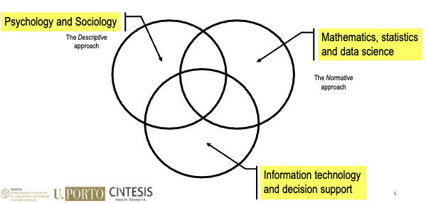

Lesson 01 - Decision-making, Decision Sciences and Evidence-Based Decision-Making#
Summary#
Decision-making, decision sciences and decision analysis
The evolution of medicine and evidence-based medicine
The evidence-based approach
Translating research into practice and practice into research
Decision-making, Decision Sciences and Decision Analysis#
Life involves making decisions!
Decision makers require guidelines and expert support
Most important decisions involve
multiple uncertainties and complexities
multiple outcomes, which can often be evaluated using multiple attributes/criteria
Multiple decision-making stages and long time delays between action and reaction
Need information gathering and analysis at every stage
Multiple decision makers and stakeholders and conflicting objectives and timings
Examples in everyday life include business, government policy, medicine, law, and personal decisions
The disciplines of decision Making#

Bounded rationality / prospect theory#
The principle of ”bounded rationality”
”The capacity of the human mind for formulating and solving complex problems is very small compared to the size of those problems whose solution is required for objectively rational behavior in the real world or even for a reasonable approximation to such objectivity.”
System 1
Fast, intuitive, associative
Initial reactions swift and appropriate
Generally very good
Short term predictions accurate
Uses heuristics
Often affected by systematic biases
Doesn’t understand logic and statistics
Cannot be turned off
System 2
Slow (lazy)
Deliberate, self control
Reasoning & rationality
Cognitive effort, hard work
Ego depletion
Prospect Theory – Kahneman & Tversky
Prospect theory assumes that losses and gains are valued differently, and thus individuals make decisions based on perceived gains instead of perceived losses. Also known as the “loss-aversion” theory, the general concept is that if two choices are put before an individual, both equal, with one presented in terms of potential gains and the other in terms of possible losses, the former option will be chosen.
There are 3 main factors that influence decision making in prospect theory:
Certainty: In prospect theory, there are two types of certainty. The first is the certainty of gain, and the second is the certainty of loss.
Isolation Effect: In prospect theory, the isolation effect occurs when people focus on differences between options rather than similarities. This is to reduce the cognitive strain placed on our brains and simplify the decision-making process.
Loss Aversion: In prospect theory, loss aversion is where an individual’s fear of losses is greater than their joy of gains. In other words, people prefer to minimise losses than maximise gains.